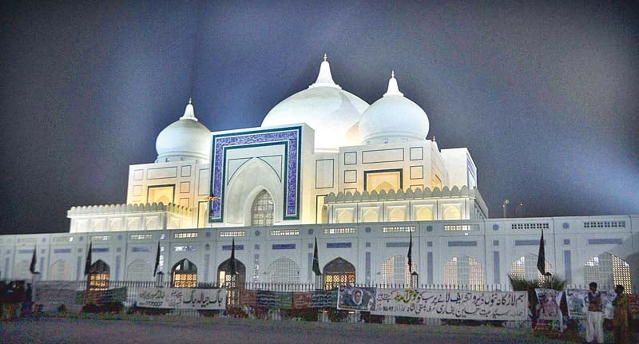

<div class="portfolio-single-load clearfix">
    <div class="custom-full-width-box">
        <div class="custom-container">
            <div class="custom-row align-items-center">
                <div class="custom-image-column">
                    
                </div>
                <div class="custom-text-column">
                    <h2 class="custom-heading">Shrine of Benazir Bhutto</h2>
                    <p class="custom-paragraph">
                        The shrine of Benazir Bhutto, located in Garhi Khuda Bakhsh near Larkana, is a mausoleum dedicated to the former Prime Minister of Pakistan. It is a popular pilgrimage site and a symbol of reverence for her contributions to the country. Visitors can pay their respects at the shrine, explore its beautiful architecture, and learn about the life and legacy of this iconic political figure
                    </p>
                </div>
            </div>
        </div>
    </div><!-- .custom-full-width-box end -->

</div><!-- end single-project -->
